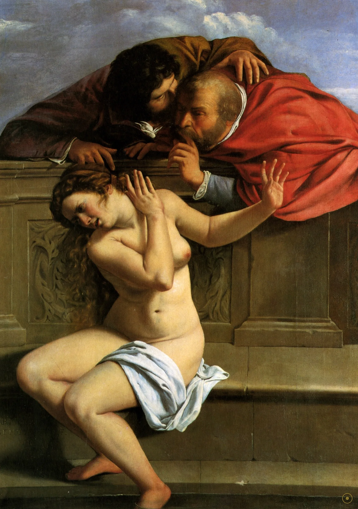
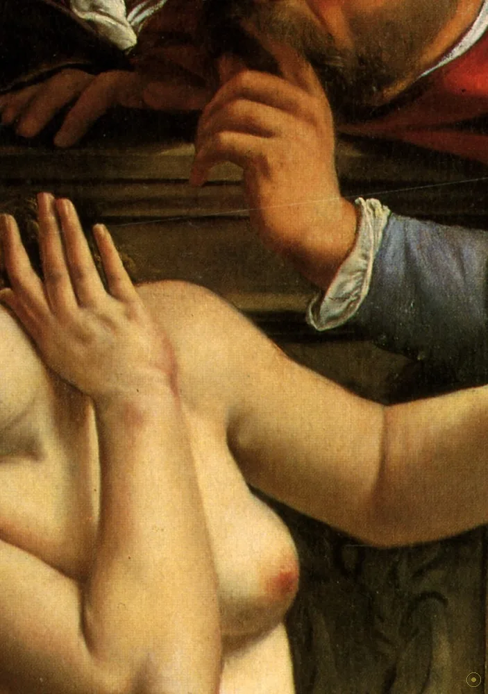
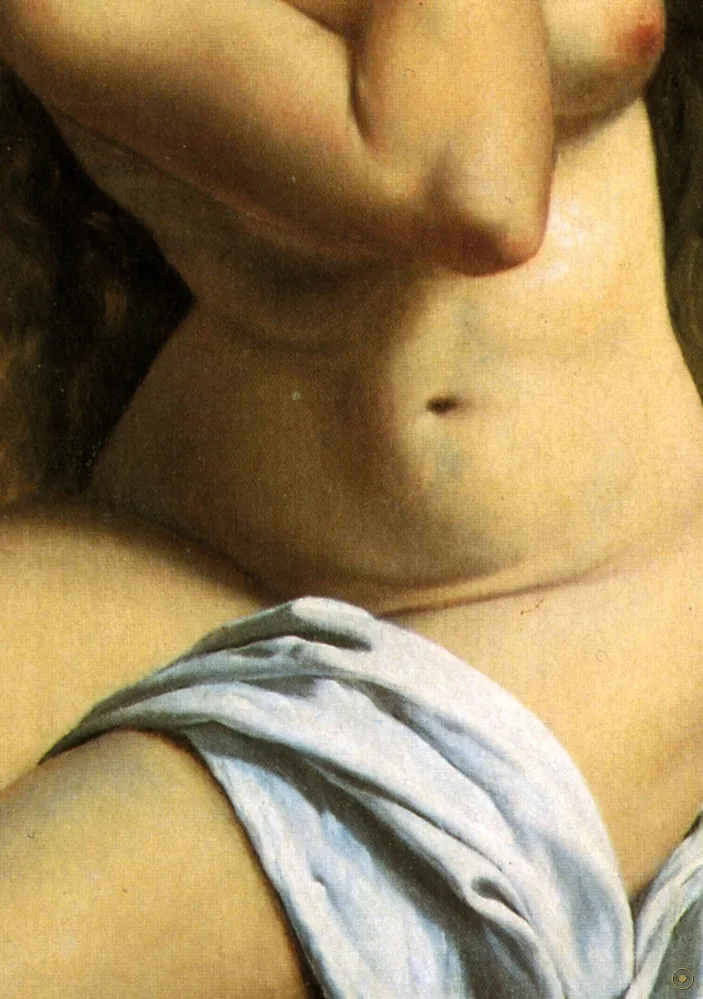
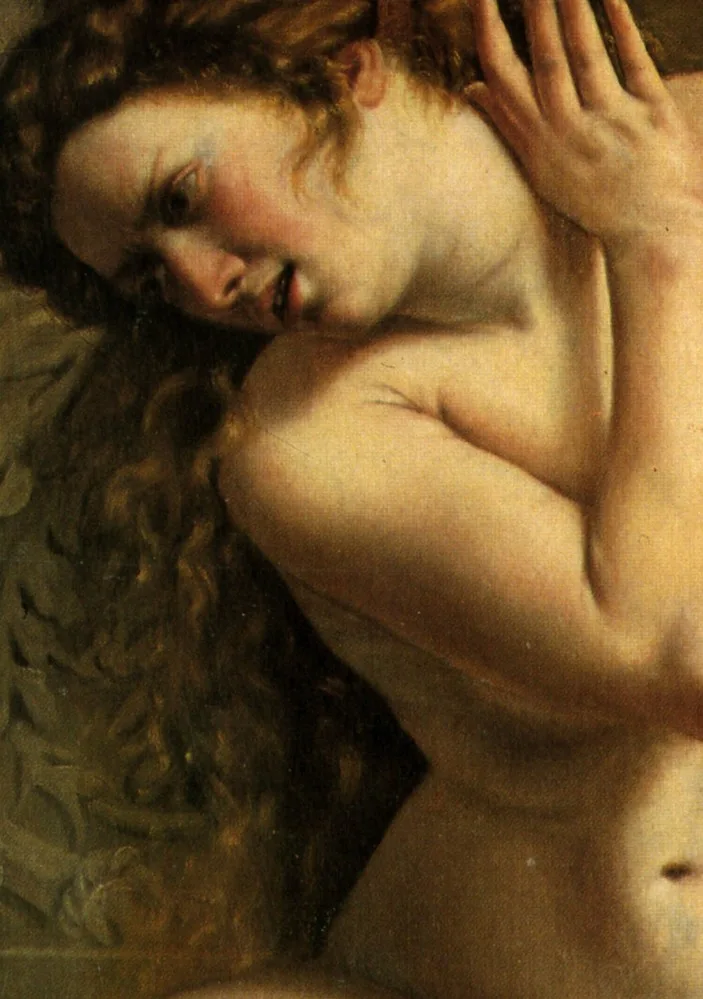
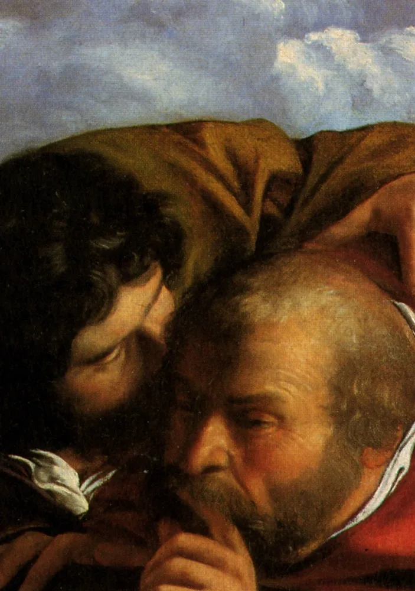
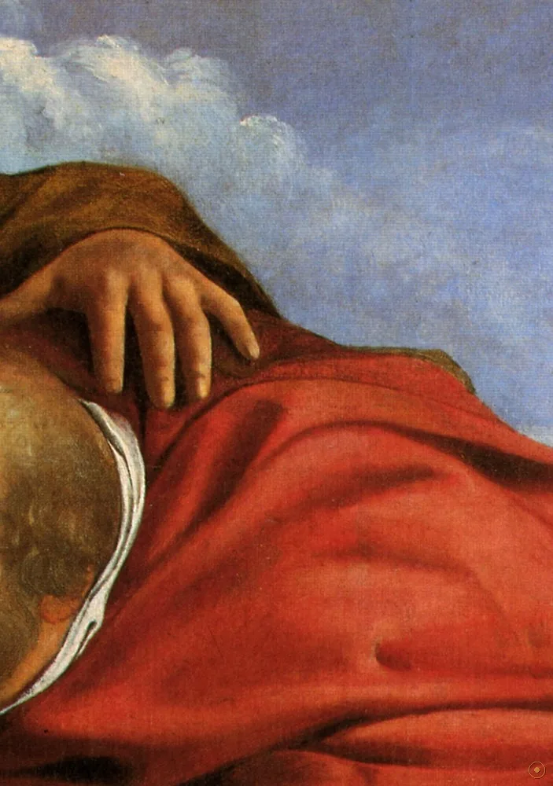
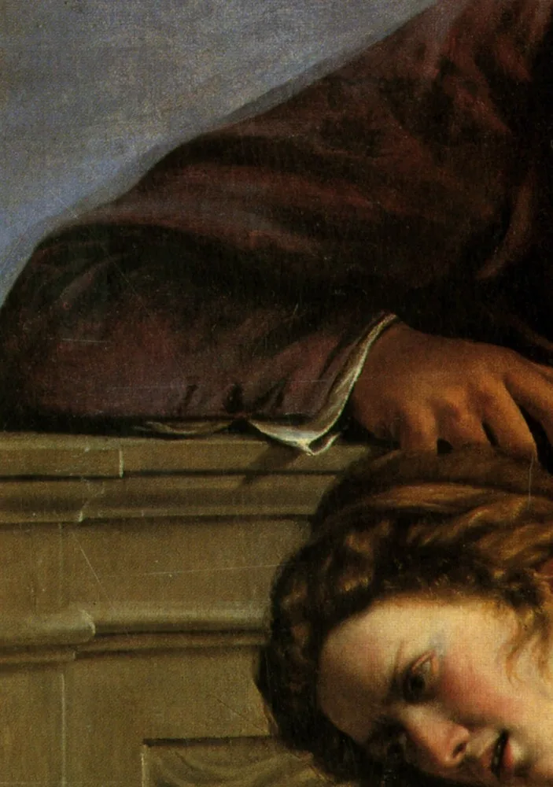
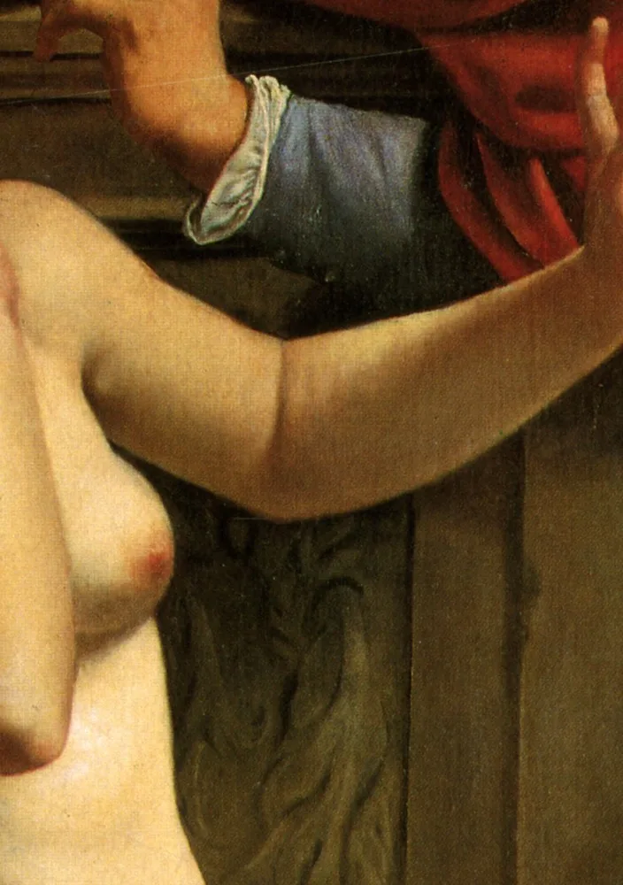
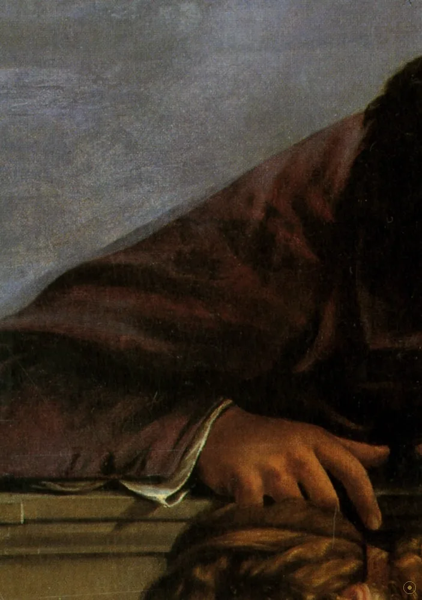

本页面展示的画作包含 艺术人体 / 裸体 内容。所录作品均为美术馆级公有领域馆藏，仅作艺术欣赏与学习之用，不含任何低俗或违规意图。
若您未满 18 周岁，或对此类内容感到不适，请点击「返回画廊」。点击「进入欣赏」即表示您已知悉上述说明，并同意仅作艺术欣赏之用。
1610 年，十七岁的阿尔泰米西娅·真蒂莱斯基画下《苏珊娜与长老》——这是她现存最早、且有署名与日期的作品。画中，年轻女子在花园沐浴，两个老人躲在暗处偷看、要挟、最终诬陷她。这是一则关于窥视、胁迫与清白的古老故事，却被一个女画家，画成了女性视角的证言。
题材来自《达尼尔书》的次经（天主教与东正教接受，新教一般不用）：苏珊娜去花园沐浴，两个长老藏在暗处，要以告发相逼她就范；她拒绝，长老反诬她通奸——在当时，这是死罪。直到少年达尼尔分别审问两人、供词矛盾，冤案才得雪。
十七岁的真蒂莱斯基画这幅画时，尚未经历后来那场著名的审判（1612 年她控告画家塔西强奸，并当庭受刑验贞）。但「被窥视、被要挟、被污名」的结构，已经在这幅早期作品里被她精确地画了出来。
美术史家玛丽·盖拉德曾把此画与男画家阿尼巴·卡拉奇的同题作并置：卡拉奇的苏珊娜更肉感、更具挑逗的「顺从」姿态；真蒂莱斯基的则更古典、更不安——裸体被提升为英雄式的庄重，而非供人消费的对象。
—— 据大都会艺术博物馆《Orazio and Artemisia Gentileschi》及盖拉德《Artemisia Gentileschi Around 1622》等研究（转译）
真蒂莱斯基画下的，不是一个被观看的裸体，而是一个正在被逼近、却不肯低头的女人。
画面里每个人、每束光都有来处：苏珊娜的脸、长老压顶的暗影、那束勾出肌肤的光，都藏着一句潜台词。点击光点，看长老从何处压下来、苏珊娜的拧转藏着什么、那束光又把谁的视线暴露了出来。

点击画面中的 ✦ 光点 查看画中细节 · 图片来源：Wikimedia Commons（公有领域）
从罗马少年的一鸣，到几世纪的冷落，再到二十世纪的翻身——这幅画的命运，比画中任何一个人都更跌宕。
1610 · 罗马少年
约十七岁的真蒂莱斯基在父亲奥拉齐奥（卡拉瓦乔的追随者）工作室环境里完成此画，是她现存最早、且有署名与年份的作品——一个女画家职业生涯的开端。
➤1610–1810 · 沉默
此画长期不为人知，随波默斯费尔登的舍恩博恩收藏辗转；在男权主导的艺术史叙事里，苏珊娜题材多被读作「情色」，而非「胁迫」，真蒂莱斯基的声音被压在注脚里。
➤20 世纪至今 · 重读
伴随女性主义艺术史（盖拉德等）的兴起，此画被视为「男性凝视」的最早反题之一；今藏巴伐利亚波默斯费尔登城堡，与《朱迪斯斩首荷罗孚尼》并列，成为真蒂莱斯基的标志。

其一 · 真实的次经故事。苏珊娜的故事出自《达尼尔书》次经，是西方艺术反复描绘的「窥视与诬陷」母题；真蒂莱斯基只是把它从「情色」拉回了「胁迫」。
其二 · 尺寸的宣言。170 × 121 厘米的竖幅，把单人裸体撑到近真人大小，等于把「受害者」请上祭坛般的尺幅——这在当时多用于宗教或神话题材。
其三 · 会「变暗」的油画。和所有巴洛克油画一样，表面清漆随岁月氧化发黄，今天的暗背景比原来更深沉；我们以为的「黑」，部分是时间替她加的一层滤镜。
※ 此画为画家自选题材；「卡拉奇对照」「鲁本斯噤声手势来源」「盖拉德的女性主义重读」均为主流艺术史通说或考证。画家 1612 年的受审发生在本画之后，故不宜将本画直接读作其个人遭遇的写照。
把这场凝视拆开，每个元素都有自己的重量；而真正的主角，是那束把肉体从黑暗里托出来的光。
转头望向画外，眉眼间写满不安；被看的不是裸体，而是这张脸。

近乎雕塑的体态，把裸体提升到受难者般的圣像地位。

身体拧转、坐得不舒服——盖拉德读出的，是拒绝而非邀约。

从上方压下来的老人，是次经里诬陷苏珊娜的两个长老之一。

食指抵唇——借自鲁本斯的「别出声」，把威胁变成阴冷的胁迫。

整幅画被黑暗吞没，唯光所及之处，才是「被看见」的人。

横在身前的手臂与手，把「不」写进身体，而不只是结局。

石筑的围院而非敞亮花园，让偷窥发生在一个没有出口的空间。
父亲奥拉齐奥是卡拉瓦乔的追随者；真蒂莱斯基承其明暗法，把宗教与神话的戏剧性光，投到世俗的受难者身上。
文艺复兴以降，苏珊娜多是男画家笔下的「偷窥情色」；真蒂莱斯基与后来的拉维尼亚·丰塔纳等女画家，开始把它读作胁迫与清白。
玛丽·盖拉德等指出：此画把「被看的裸体」还原为「被威胁的人」——比「女性主义艺术」一词早了三百多年。
十九世纪前，她被艺术史轻描淡写；二十世纪女性主义艺术史兴起后，真蒂莱斯基与《苏珊娜》一并被重新奉为先驱。
署名与日期完成，真蒂莱斯基现存最早的作品。
控告塔西强奸并当庭受刑；其个人遭际此后常与本画并读（但本画在前）。
随舍恩博恩收藏藏于波默斯费尔登城堡，长期沉寂。
女性主义艺术史兴起，被重读为「男性凝视」的反题与先驱。
与《朱迪斯斩首荷罗孚尼》并列，成为真蒂莱斯基最著名的面孔之一。